01学習塾専門
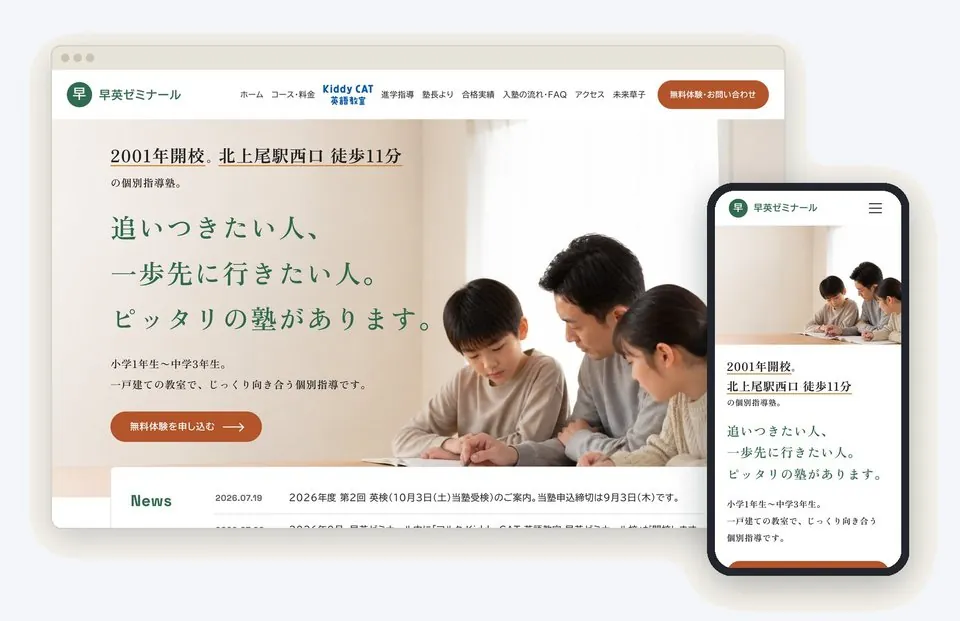
保護者が塾を選ぶ順番（スマホで開く→最初の画面→料金・対象学年→実績と先生の顔→問い合わせ）に沿って作ります。学習塾82塾を診断して分かった、候補から外れやすいところを先に直します。
- スマホで開いてすぐ、どこの・誰向けの塾か分かる
- 料金・対象学年・講習の案内を、画像ではなく文字で
- 塾長・講師の顔と、合格実績・成績の伸び
- スマホから問い合わせまで、迷わない導線
個人塾・地域密着塾の先生へ学習塾専門のホームページ制作
文章も写真もデザインも、こちらで作ります。
公開したあとも、毎月の数字を見ながら一緒に直します。
制作費110,000円税込・はじめに一度だけ
＋保守費用 月2,200円（1年契約）
担当 小田 一勲合同会社SyUNi 代表
担当：小田 一勲（合同会社SyUNi 代表）塾の集客を10年以上。Edu-NEWS 登録者3,480人。学習塾82塾のHPを診断。
通常1営業日以内にメールでお届け。こちらから突然お電話することはありません。
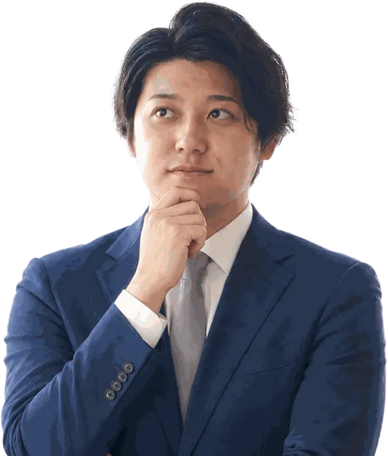
ひとつでも当てはまれば、無料HP診断で、どこから手をつけるかを整理できます。
保護者の塾の探し方
2026年10月に公開された保護者向けの調査では、塾探しにAIを使った保護者の多くが、いつものGoogle検索の中でAIの答えを見ていました。そしてほとんどの人が、AIの答えをそのまま信じずに調べ直しています。
GoogleのAI（AIによる概要・AIモード）を使った
AIの答えのあと、別の情報源で調べ直した
調べ直した先（複数回答）
塾の比較サイト
Googleマップクチコミ・写真など
塾の公式ホームページ
AIは塾を知る入口。そのあと保護者は、Googleマップやホームページなどで確かめています。
どこを見ても同じ、新しい情報がそろっていることが、比べる候補に残る条件になります。
出典：株式会社カンリー「保護者の5割以上が塾探しでAIを利用！」（PR TIMES・2026年10月23日）。回答は塾探しにAIを使った保護者1,000人とみられます。調査の時期・方法は公表されていません。
この調査の読み方は、動画でも解説しています（YouTube・8分36秒）
原因
授業と面談で一日が終わるなかで、ホームページ・Googleマップ・AIでの見え方まで手を回すのは難しいことです。当社が学習塾のホームページを1件ずつ診断すると、こうでした。
51.5%
Googleマップに
課題があった
追加確認した33塾
63.6%
検索とAIでの見つかりやすさに
課題があった
追加確認した33塾
40.2%
情報が古いまま
止まっていた
82塾
※当社の無料HP診断（2026年7〜8月）の集計です。母数は項目ごとに異なります。診断の集計を見る
この人が担当します
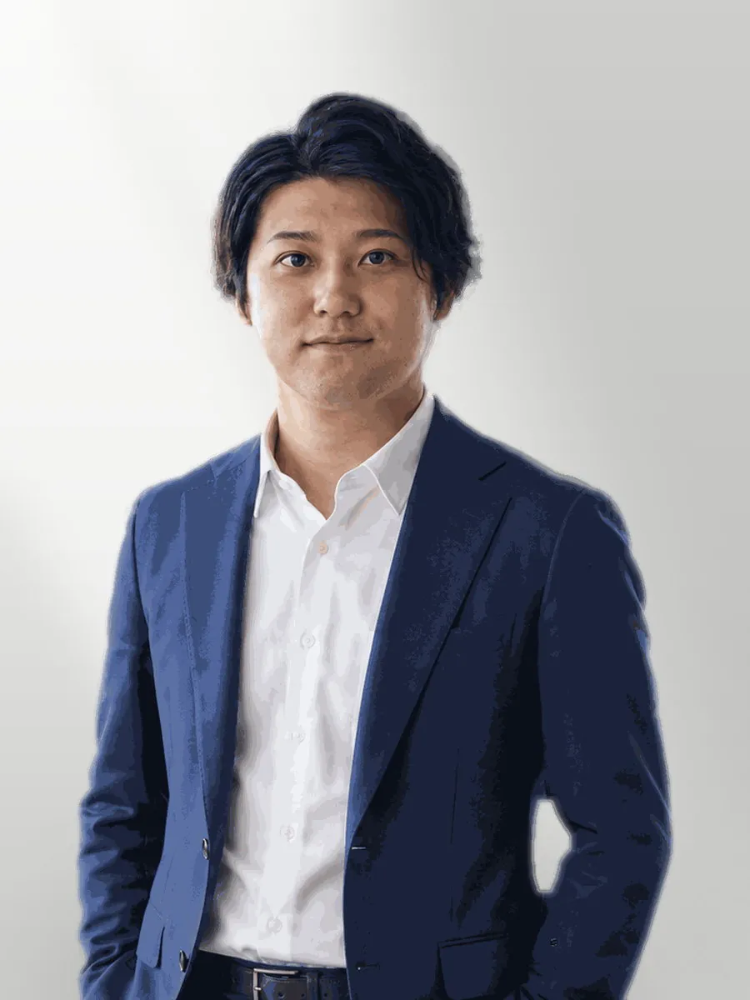
教育ニュース解説「Edu-NEWS」を運営（登録者3,480人・2026年8月時点）
塾の先生と直接話す仕事を続けてきました。ホームページの話になると、返ってくる言葉はだいたい二つです。手が回っていない。頼むと高い。どちらもそのとおりだと思います。授業と面談で一日が終わるなかで、更新まで手を伸ばすのは難しく、制作費が生徒何人分かに相当するなら、後回しになるのが自然です。
だから、原稿づくりから引き受けて、制作は110,000円、毎月の保守は2,200円にしました。作ったあとは、塾がご自身でも書き換えられます。
スマ塾は「業者に外注する」サービスではありません。塾業界を知る人間が、あなたの塾のWeb担当として隣に座ります。HP・Googleマップ・AI検索・AI活用、どこから相談してもらっても大丈夫です。
選ばれる理由

保護者が塾を選ぶ順番（スマホで開く→最初の画面→料金・対象学年→実績と先生の顔→問い合わせ）に沿って作ります。学習塾82塾を診断して分かった、候補から外れやすいところを先に直します。
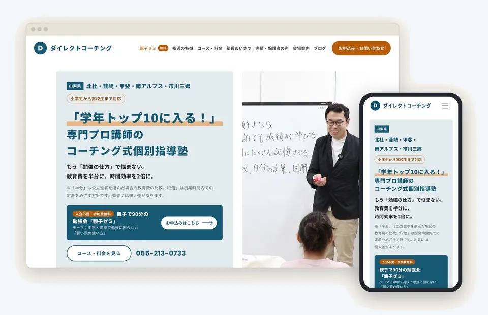
60分のお話をもとに、原稿はこちらで書きます。デザインは型に当てはめず、塾ごとに一から作ります。今のホームページの記事も、本数の上限なく引っ越します。先生は、届いた原稿を確認するだけです。
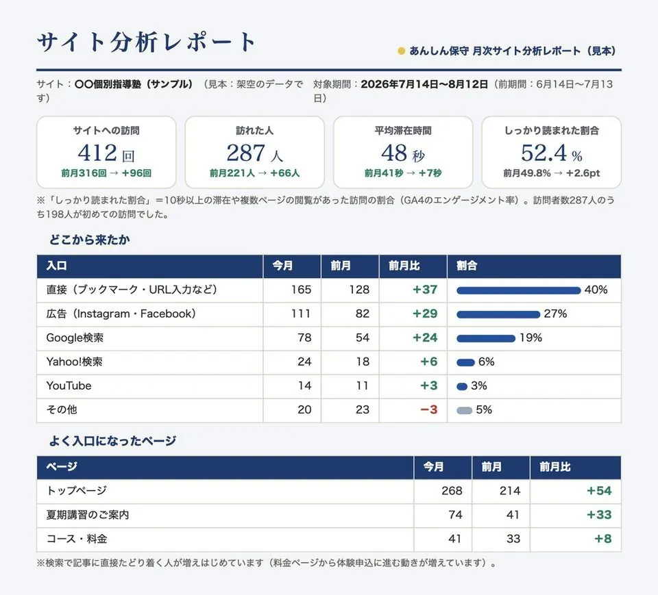
公開後は、管理画面から塾ご自身で直せます（回数無制限・0円）。毎月のGA4レポートで、見に来た人数・読まれたページ・問い合わせ数を一緒に確かめます。
管理画面のイメージを開く（※架空の塾で作ったモック画面です）
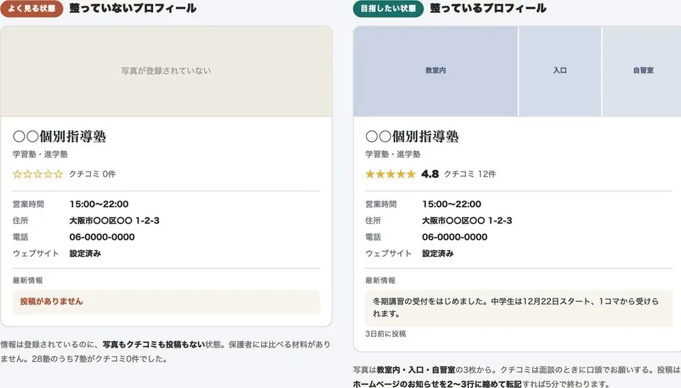
保護者が調べ直すGoogleマップとホームページの情報を、公開の時点でそろえて整えます。ここまでは制作費に含みます。公開後の投稿の代行や、見え方の定期チェックは、月額の更新おまかせ（月4回）で承ります。
※AIや地図で候補に出ることや、順位はお約束しません。読み取られやすい状態に整えるところまでを行います。
制作事例
どちらも無料HP診断から始まりました。左が以前のHP、右が公開後のHPです。
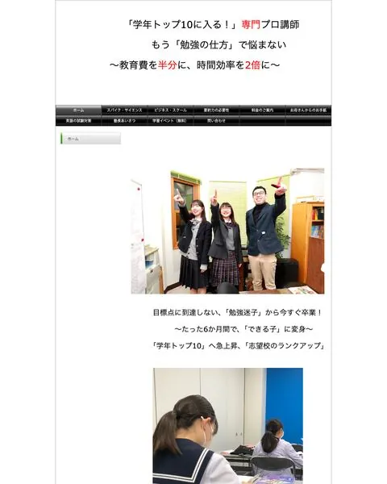
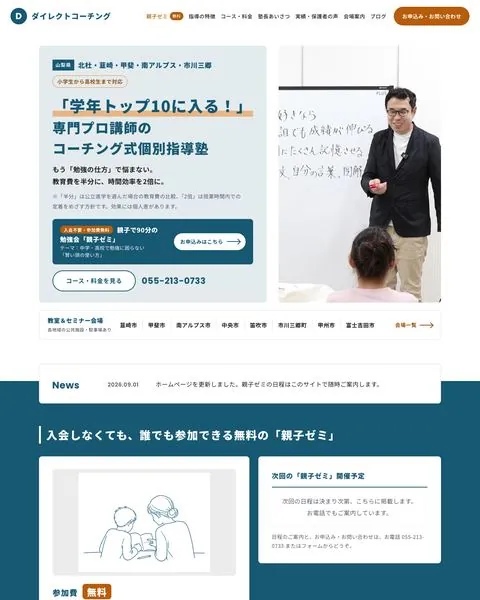
教室を持たず、公共施設10会場で教えるコーチング塾。13年使った旧サイトを作り直し、親子ゼミの日程も内容も塾長が管理画面からいつでも更新します。
「自分一人では絶対つくれない」完成度の高さ中込 塾長
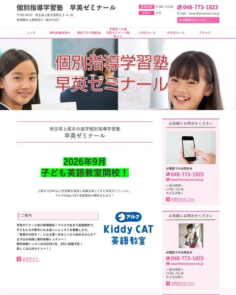
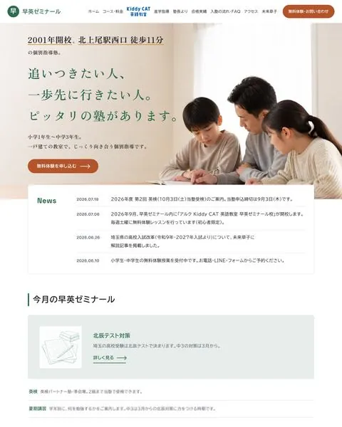
2001年開校の個別指導塾。月額制のサービスから塾名義の買い切りHPに切り替え、ブログ・お知らせ・料金は塾長が管理画面から更新します。
「仕上がりには満足しかありません」矢頭 塾長
料金
いまのホームページの文章・写真・記事は、そのまま新しいホームページへ引っ越します。住所（ドメイン）も変わりません。公開の翌月からは、毎月のアクセスレポート（GA4）つきの保守費用 月2,200円（1年契約）をご契約いただきます。サイトとドメインは塾さまのもので、保守をおやめになってもそのままお使いいただけます。表示は税込です。
制作費110,000円（税込）／税別100,000円・着手時50%・公開後50%
公開したら
毎月2,200円（税込）／税別2,000円
保守費用（1年契約）
最初の1年でお支払いいただく総額
136,400円（税込）
110,000円＋2,200円×12か月／サーバー代 0円／ドメインの更新費（実費）は別
こちらでやること（制作費に含まれます）
8ページ＝トップ／コース・料金／講師／合格実績／よくある質問／お知らせ・ブログ／アクセス／お問い合わせ
あんしん保守（月2,200円・1年契約）は、すべての塾でご契約いただきます。更新まで任せたい塾は、月5,500円か月10,780円に切り替えられます（保守の内容を含みます）。
あんしん保守全塾
月2,200円
1年契約以後1年ごとの自動更新（2か月前までのご連絡で解約）
更新おまかせ 月1回
月5,500円
最初の6か月以後は1か月前までのご連絡で解約
更新おまかせ 月4回
月10,780円
最初の6か月以後は1か月前までのご連絡で解約
あんしん保守は、公開の翌月から最初の12か月をご契約いただき、以後は1年ごとの自動更新です（更新日の2か月前までのお申し出でおやめいただけます）。更新おまかせは最初の6か月をご継続いただき、以降は1か月前までのお申し出で解約できます。最初の契約期間の途中で解約される場合は、残りの期間分を申し受けます。更新おまかせ（月4回）は、四半期ごとのGoogleマップ・AI検索での見え方チェックつきで、使わなかった回数は繰り越さず、4回を超えた分は1回3,300円です。おやめになった後も、ホームページとドメインは塾さまのものです。表示はすべて税込です。
ドメインの更新費
実費年数千円程度
ドメインは塾さま名義です
ドメイン・移転の初期設定
11,000円 → 0円
無料診断の結果から1週間以内のお申し込みで
9ページ目から
1ページ8,800円
ページを増やしても月額は同じ
※無料HP診断だけで終えていただいてかまいません。
※価格はすべて税込・2026年10月31日時点のものです。制作したホームページは資産として残せます。
費用の比べ方
ここまでで、スマ塾の総額・含まれる範囲・公開後に何が塾さまのものとして残るかをお伝えしました。そのうえで、よくある料金の形をA社・B社（月額制）、C社（制作会社）として並べます。サーバー代も含めた3年の総額で見てください（スマ塾は、保守を3年続けた場合で計算しています）。A社〜C社は、学習塾向けのHP制作でよくある料金体系の例（当社調べ）で、特定の会社の価格ではありません。
| 会社 | 初期費用 | 月額 | サーバー代 | 最低契約期間 | 3年で払う総額サーバー代込み・ドメイン実費を除く | 3年後にやめたら |
|---|---|---|---|---|---|---|
| A社月額制 | 0円 | 8,800円 | 月額に含む | 36か月 | 316,800円 | 契約条件によります |
| B社月額制 | 5,000円 | 9,800円 | 月額に含む | 36か月 | 357,800円 | 契約条件によります |
| C社制作会社 | 30〜100万円 | 5,000〜30,000円 | 月1,000〜4,400円保守とは別に実費 | — | 約52〜224万円 | 契約条件によります |
| スマ塾 | 110,000円税込・標準8ページ・原稿込み | 2,200円毎月の報告・保守込み | 0円保守に含みます | 12か月 | 189,200円保守を3年続けた場合 | サイトもドメインも塾のもの保守をやめても、そのまま使えます |
※A社〜C社は、学習塾向けのホームページ制作サービスの公開料金をもとにした、よくある料金体系の例です（2026年10月時点・当社調べ）。特定の会社を示すものではありません。実際の料金・契約条件・解約時の扱いは、各社の規約をご確認ください。
※C社のサーバー代は、制作会社に納品してもらう形で塾がサーバーを別に契約した場合の例です（月1,000〜4,400円×36か月を加算）。
※スマ塾の3年総額は、制作費110,000円に保守（月2,200円）を36か月続けた場合です。ご契約が必要なのは最初の12か月です。
※スマ塾はサーバー代がかかりません。独自ドメインの更新費（実費・年数千円程度）のみ別途かかります。
他社と比べるとき、商談で1つだけ聞いてほしい質問
「そのHPは、解約したら手元に残りますか？」
スマ塾は、サイトもドメインも塾のもの。保守をやめても、そのまま使えます。
いま月額を払っている塾へ。無料HP診断のフォームで「いまの月額」をお選びいただければ、3年でいくら払うことになるかと、契約が残っている場合の乗り換えの順番（先に解約してはいけない理由、記事とドメインを失わない方法）を、診断レポートに1ページ足してお送りします。
ご相談の流れ
進む・進まないは、レポートを読んでから決めていただけます。2番目から先へ進むのは、ご希望された塾さまだけです。
フォームからご連絡ください。いまのホームページを1件ずつ確認し、改善点3つを1枚のレポートにして、通常1営業日以内にメールでお送りします。ここで終わりにしていただいてかまいません。
フォームで「相談も希望」を選ばれた方に、レポート送付時に予約リンクをお送りします。日時をお選びいただき、レポートの中身と進め方をご説明します。
構成案とお見積りをお出しします。ご納得いただけたら制作枠を押さえ、着手日を決めて制作に入ります。
必要な素材がそろった日から1か月ほどを目安に公開し、管理画面での更新のしかたを60分でお教えします。
オンラインで60分ほど。塾の強みや、保護者によく聞かれることを伺います。
届いた原稿と画面を読んで、直してほしいところを伝えるだけです（2回まで）。
写真・料金表・合格実績など、手元にあるものだけで大丈夫です。
文章を一から書く必要はありません。今のホームページがある場合は、その文章と記事をもとにこちらで整えます。
※無料HP診断のお申し込みは、制作のお申し込みではありません。診断のあとに、こちらから突然お電話することはありません。オンライン相談・日時の予約・制作のお申し込みは、それぞれ別の手続きです。
よくある質問
いいえ。診断結果はご入力のメールアドレスへお送りし、こちらから突然お電話することはありません。オンラインでのご相談は、フォームで「相談も希望」を選ばれた方にだけ、レポート送付時に予約リンクをご案内します。電話番号の入力は任意で、ご記入がなくても診断レポートはお送りします。無料HP診断だけを受けて終えていただいてかまいません。
対応しています。現在のホームページの文章や写真を活かしながら、スマホ対応・問い合わせ導線・情報の鮮度を整えて作り直します。ホームページがない塾の新規立ち上げにも対応しています。
はい。お知らせ・ブログ・料金表・合格実績・成績事例・FAQ・画像は、管理画面から専門知識なしで更新できます。ご自身で更新される分は回数の制限も費用もありません。更新マニュアルもお渡しします。すべての塾さまにお付けするあんしん保守（月2,200円・税込）でも、月1回・15分以内の軽微な修正は代行します。何を書けばよいか迷う月や、反映まで任せたい場合は、更新おまかせ（月5,500円で月1回／月10,780円で月4回・いずれも税込）で更新を代行します。
あんしん保守（月2,200円）は、公開の翌月から最初の12か月をご契約いただき、以後は1年ごとの自動更新です。更新日の2か月前までのお申し出でおやめいただけます。更新おまかせ（月5,500円・月10,780円）は最初の6か月をご継続いただき、以降は1か月前までのお申し出で解約できます。最初の契約期間の途中で解約される場合は、残りの期間分を申し受けます。おやめになった後も、ホームページとドメインは塾さまのものです。
はい、可能です。基本商品のスマ塾HP制作（110,000円・税込。標準の8ページ・原稿づくり込み）と、あんしん保守（月2,200円・税込）で、ホームページ制作のみのご依頼を承っています。Googleマップ・AI検索の初期整備は制作費に含みます。公開後の投稿の代行や見え方の定期チェック、AI活用のサポートは、必要になったタイミングで追加できます。
納品するホームページのうち、当社が塾さま向けに制作したデザイン・文章・設定の著作権は塾さまに帰属します。テンプレートの共通部分・オープンソースのプログラム・第三者の写真素材は、それぞれの利用条件に基づいて塾さまに利用を許諾します。塾さまからお預かりした写真・原稿の権利は塾さまのままです。独自ドメインは塾さま名義で取得・登録し、管理画面の管理者権限もお渡しします。当社との取引が終わっても、そのままお使いいただけます。
はい。公開の翌月から最初の12か月は、あんしん保守＋毎月のGA4レポート（月2,200円・税込／税別2,000円）をご契約いただきます。ホームページは公開してからが本番で、見に来た人数・読まれたページ・問い合わせ数を毎月見ながら直していくためです。13か月目以降は1年ごとの自動更新で、更新日の2か月前までのお申し出でおやめいただけます。おやめになった後も、ホームページとドメインは塾さまのもので、そのままお使いいただけます。
公開後30日間は、制作に起因する表示不具合の修正と、文章・画像・PDFの差し替えなどの軽微な修正を無償で承ります（レイアウトの作り替え・ページ追加は含みません）。公開の翌月からは、あんしん保守＋毎月のGA4レポート（月2,200円・税込／税別2,000円）で、毎月のサイト分析レポート・ドメイン更新の代行・毎日の死活監視・月次バックアップ・軽微な修正（月1回・15分以内）をお引き受けします。それを超える修正は修正代行3,300円/箇所（税込）、定期的に更新を任せたい場合は更新おまかせ（月5,500円で月1回／月10,780円で月4回・税込）です。契約期間は「契約期間の縛りはありますか？」をご覧ください。
公開の時点で、Googleビジネスプロフィールの初期整備（塾名・住所・営業時間・写真・カテゴリ）、ホームページとの情報統一、口コミを集める導線づくりを行います。ここまでは制作費に含みます。プロフィールは塾さまのもので、塾さまに管理者として追加していただき、こちらで入力を代行します（まだプロフィールがない場合は、作成と本人確認を塾さまにお願いし、手順はこちらでご案内します）。あわせて、ChatGPTなどのAI検索で塾の情報が正しく読み取られるよう、料金・対象学年・住所・営業時間を文字として明示する整理も行います。公開後のGoogleマップへの投稿の代行と、Googleマップ・AI検索での見え方の定期確認は、更新おまかせ（月4回・月10,780円）で承ります。「地域名＋塾」で探す保護者にも、AIに聞く保護者にも見つけてもらうための土台を整えます。
保護者への連絡文面、講習の告知文、ブログ記事の下書き、面談準備など、塾の実務でそのまま使えるAIの使い方を、塾長の業務に合わせてお渡しします。難しい設定は不要で、今日から使える形に整えてお渡しするのが特徴です。
無料HP診断の結果をお送りした日から1週間以内にお申し込みいただいた場合、着手枠を優先して確保し、ドメイン・移転の初期設定（11,000円・税込）を無料でお付けします。値引きではなく、通常は有料の作業を無料で追加するものです。特典期間を過ぎたお申し込みは、初期設定11,000円を申し受けます。
無料診断で届くもの
点数をつけて終わりにはしません。いまのホームページを1件ずつ開いて、すでに効いている良い点と、直すと問い合わせにつながりやすい改善点3つを、1枚のレポートにしてお送りします。
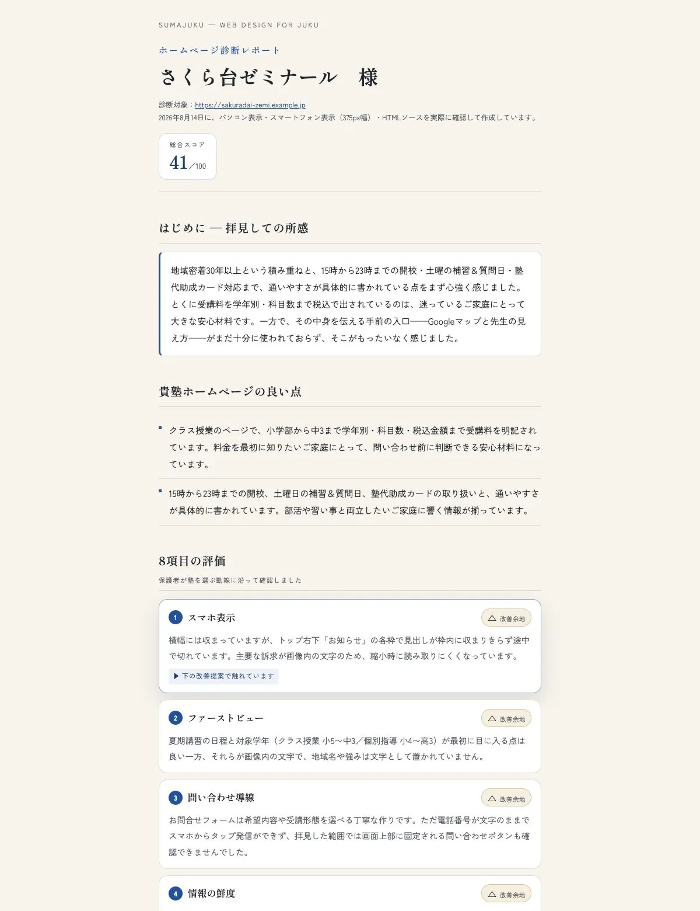
診断8項目の見方を読む（何を、どう見ているかを説明しています）
無料です。いまのHPを1件ずつ確認し、いちばん効く改善点3つを1枚のレポートにします。
通常1営業日以内（申込が集中する時期は2営業日以内）に、ご入力のメールアドレスへお送りします。
相談は希望者のみ。HPがまだない方には、開設前に決めておきたい設計メモをお送りします。診断8項目の中身を見る
通常1営業日以内（申込が集中する時期は2営業日以内）に、
ご入力のメールアドレスへレポートをお送りします。しばらくお待ちください。
日時は、この先の予約ページで選べます。
ご都合のよい面談枠をお選びください。
※このボタンで予約ページが開きます。日時が確定するのは、予約ページでお手続きいただいた後です。
あわせて、開設前に決めておきたいことをまとめた「開設メモ」もメールでお送りします。
すでにご相談内容が決まっている方は、オンライン面談枠をそのままご予約いただけます。メール（oda@syuni.jp）・お電話でも承ります。